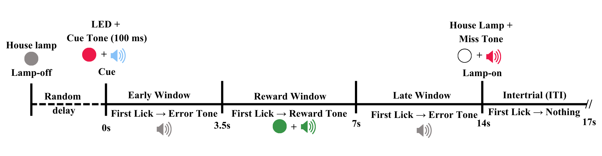
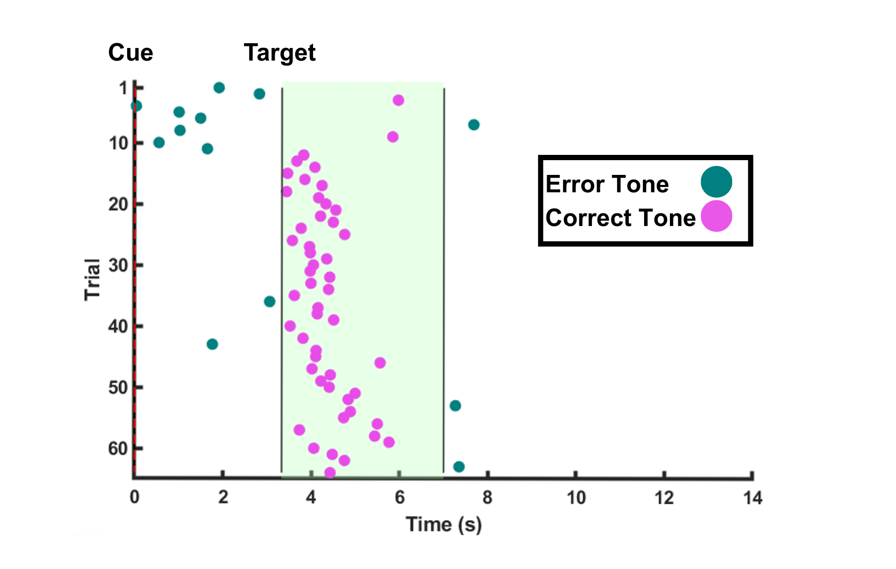
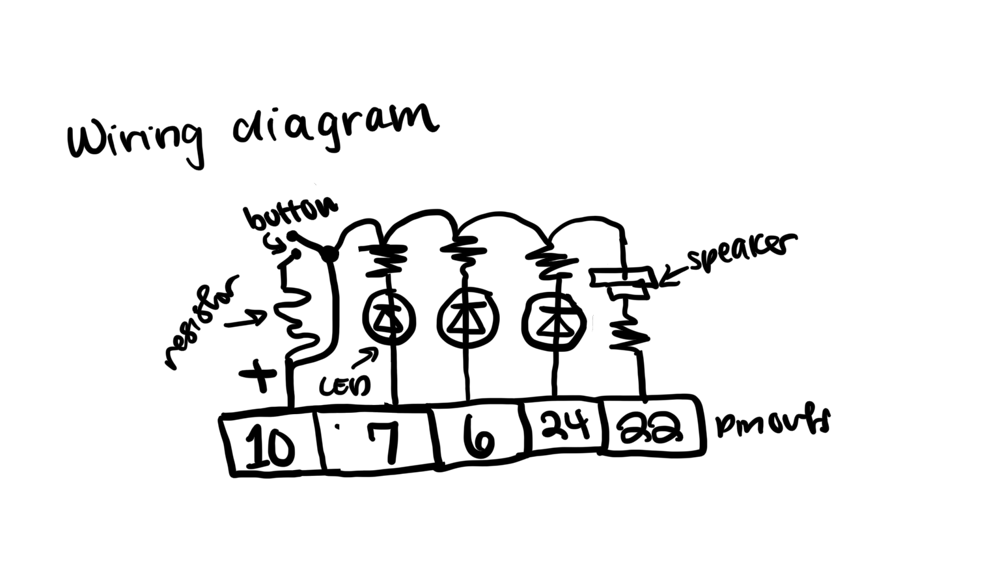
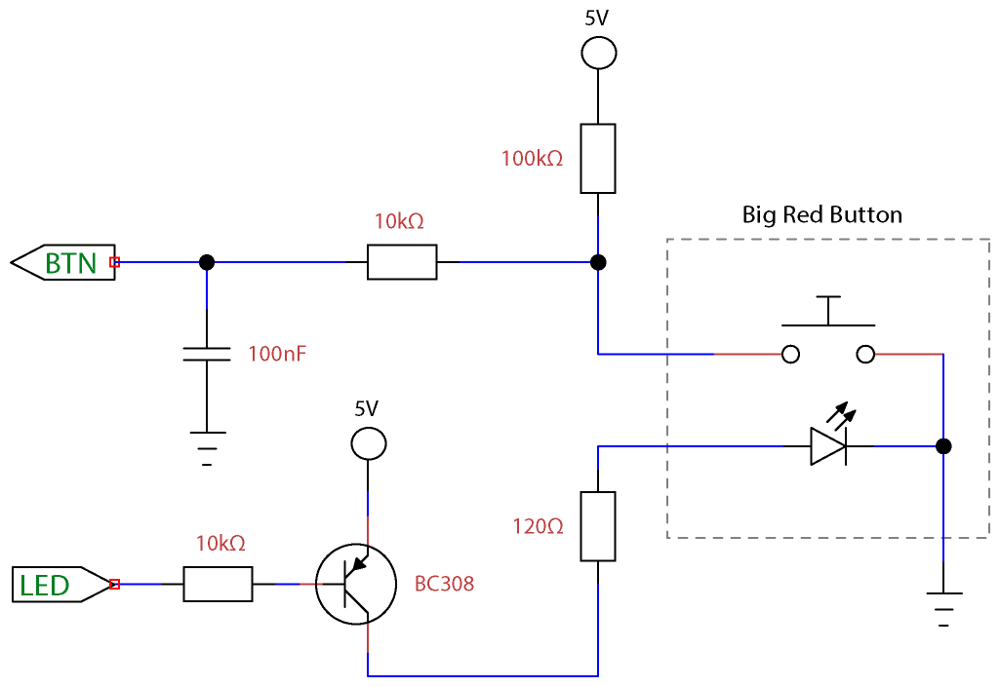
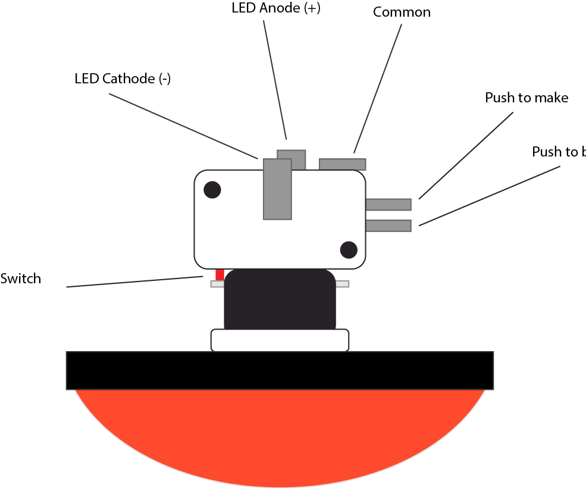
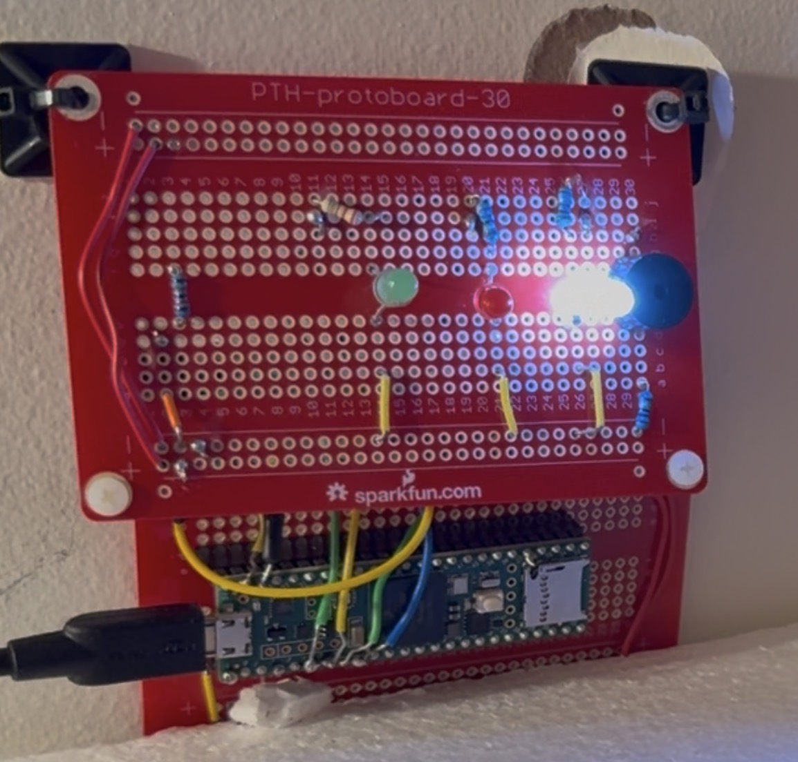
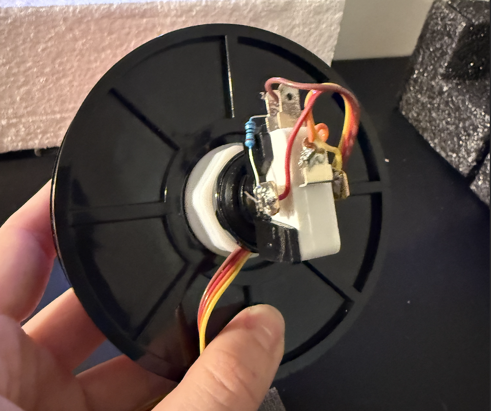

Week 4: Microcontroller Programming
Background


As an undergraduate researcher at the Hamilos Lab, I wanted to take the behavior task we did with the mice and replicate it in humans. The task works like this... Rules: the subject cannot know how the game works before hand; they are only told that they get a point when the light turns green. Strategy: there is a hidden reward interval when the subject can press the button and recieve a reward tone and the green LED. If they press the button before or after this secret interval from 3.5-7 seconds then they will get an early/late error tone. If they don't press at all they also get an error tone. Above: the timing of the behavior task (left) and some human results from when I was collecting data with the arduino below (right).
1) Sketching wiring diagram



I knew that I needed to have the following components: a push to break button, speaker, red LED, green LED, white LED, and of course wires/resistors/ground. Knowing I would want two bread boards to keep everything looking neat, I made the above wiring diagram (Left). I also knew that I wanted a large red button so I found the diagram for that (right).
2) Solder and wire together breadboards



At first, I tried to make this work across three breadboards, but then I realized that the button would be attatched too closely to be moved. So I used two breadboards, the microcontroller on one and the features (speaker, LEDs) on the other like my wiring diagram above. I learned how to solder and felt a lot more comfortable after soldering all the pins and the wires.
3) Coding Arduino
My Principal Investigator, Allison Hamilos, came up with the idea for this project and the fundamentals of the arduino code. I was able to write and modify the code for my arduino with the following steps...
1. Define pins, states (using state switching in Arduino because of the nature of this task), event markers, resulting code, sound frequencies, and parameters/parameter IDs.
// Digital OUT
#define PIN_HOUSE_LAMP 6 // white light
#define PIN_LED_CUE 7 // red light
#define PIN_REWARD 24 // green light
#define PIN_LICK_BOX 26 // detect button clicks
#define PIN_IR_LED_TRIGGER 21 // trigger led
#define PIN_3_3 27 // 3.3 V
#define PIN_SPEAKER 22
#define PIN_FIRST_LICK 16 // Sends receipt of first lick
}
2. void Setup using pinMode.
void setup()
{
// OUTPUTS
pinMode(PIN_HOUSE_LAMP, OUTPUT); // LED for illumination (trial cue)
pinMode(PIN_LED_CUE, OUTPUT); // LED for 'start' cue
pinMode(PIN_SPEAKER, OUTPUT); // Speaker for cue/correct/error tone
pinMode(PIN_REWARD, OUTPUT); // Reward OUT
pinMode(PIN_TRIGGER, OUTPUT); // Trigger OUT
pinMode(PIN_3_3, OUTPUT); // A 3.3V src
pinMode(PIN_LICK_ECHO, OUTPUT); // Lick echo
pinMode(PIN_FIRST_LICK, OUTPUT); // Send first lick pulse
// INPUTS
pinMode(PIN_LICK, INPUT); // Lick detector
pinMode(PIN_CAMO, INPUT); // Simply relays CamO to CED
}
4. Main Loop utilizing state switching.
void setup()
switch (_state) {
case _INIT:
idle_state();
break;
case IDLE_STATE:
idle_state();
break;
case INIT_TRIAL:
init_trial();
break;
// and other state switching
}
5. Define functions for events and transitions
if (_state != _prevState) { // If ENTERTING PRE_WINDOW:
setCueLED(true); // Cue LED ON
playSound(TONE_CUE); // Cue tone ON
_cue_on_time = signedMillis(); // Start Cue ON timer
// Send event marker (cue_on) to HOST with timestamp
sendMessage("&" + String(EVENT_CUE_ON) + " " + String(signedMillis() - _exp_timer));
_prevState = _state; // Assign _prevState to PRE_WINDOW state
sendMessage("$" + String(_state)); // Send HOST $3 (pre_window State)
if (_params[_DEBUG]) {sendMessage("Cue on. Lick accepted between " + String(_params[INTERVAL_MIN]) + " - " + String(_params[INTERVAL_MAX]) + " ms");}
}
4) The Final Product!
After soldering the components (a few times), making the wiring diagram, and debugging the code (this took forever) -- my version finally worked! It is currently mounted on the wall at the lab, so I was unable to bring it to class, and if I were to revise this assignment I would build another version to display in class. Either way, the code works! I believe I have learned so much and am now able to demonstrate my knowledge in soldering and Arduino coding. See the video below for the examples of some cases: such as an early button click, a rewarded click, and a missed click.